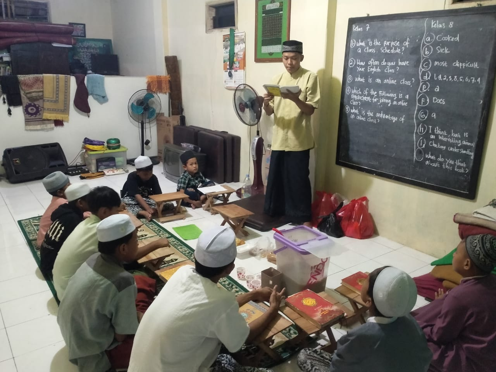
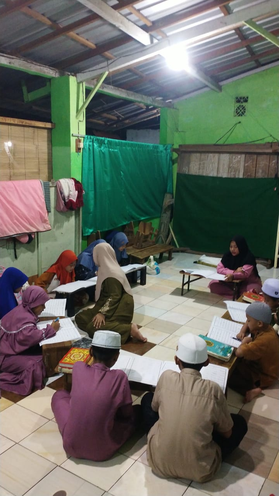
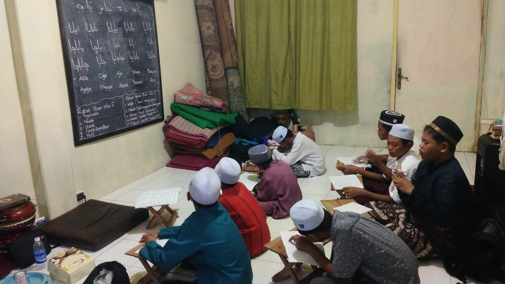
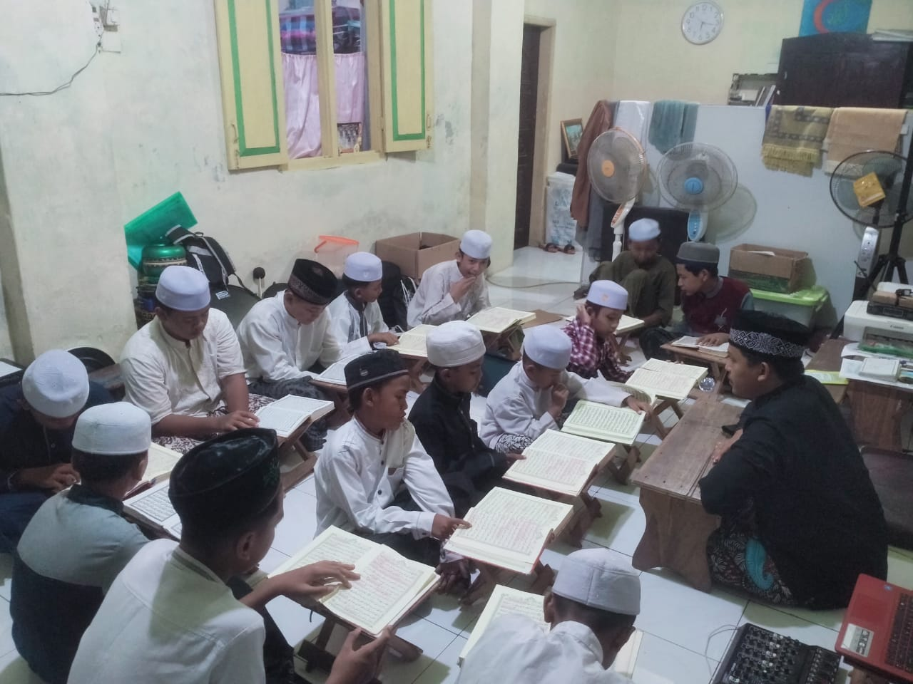
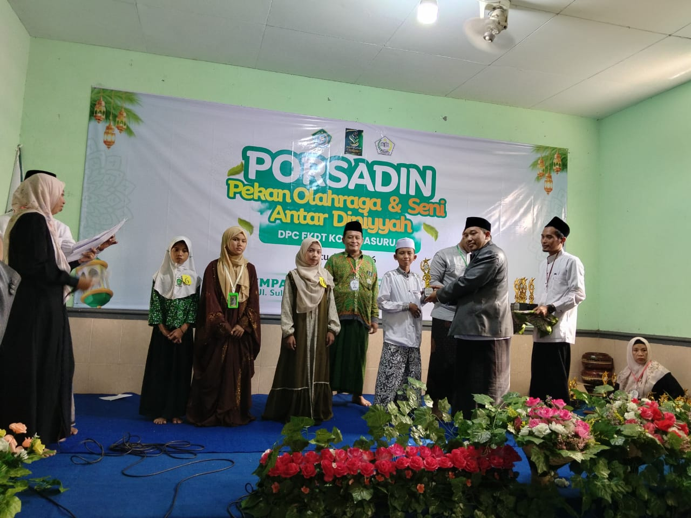
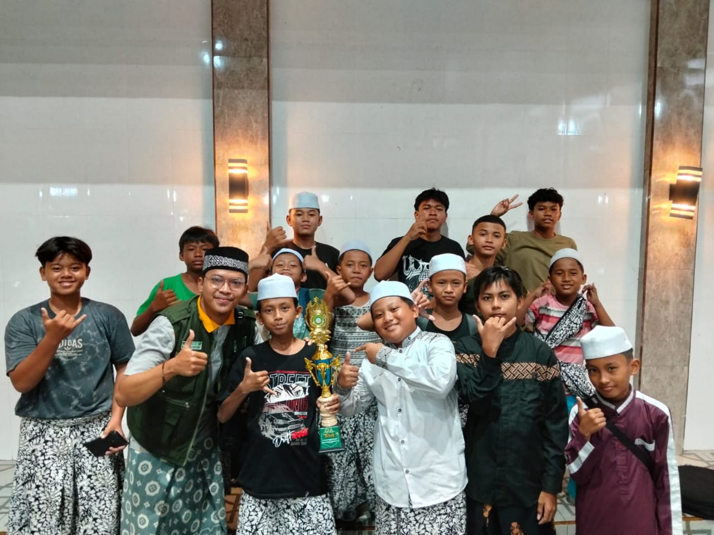
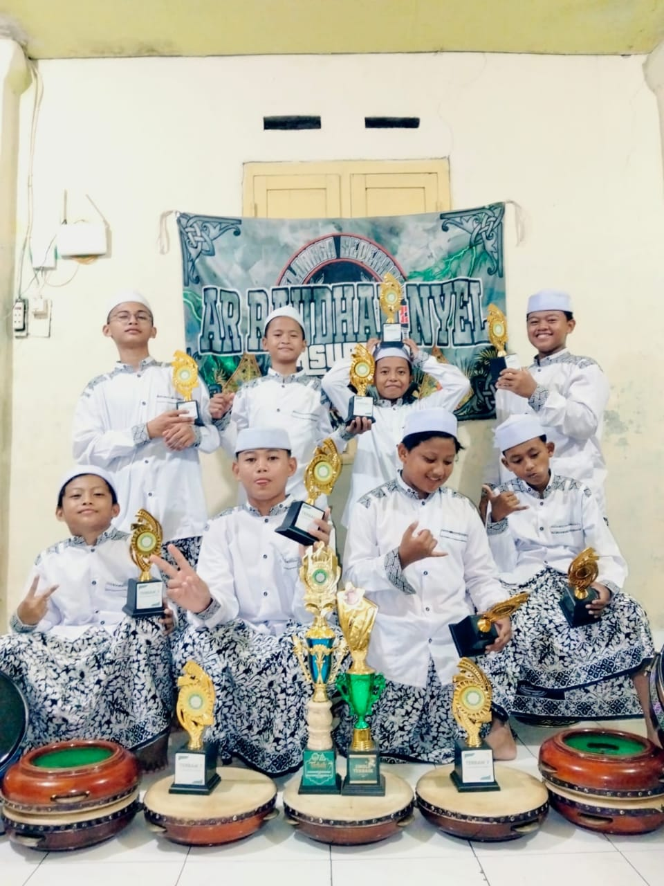
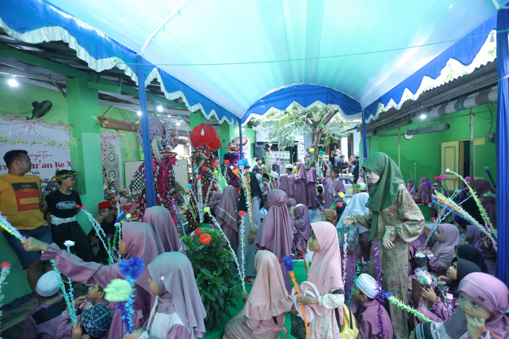
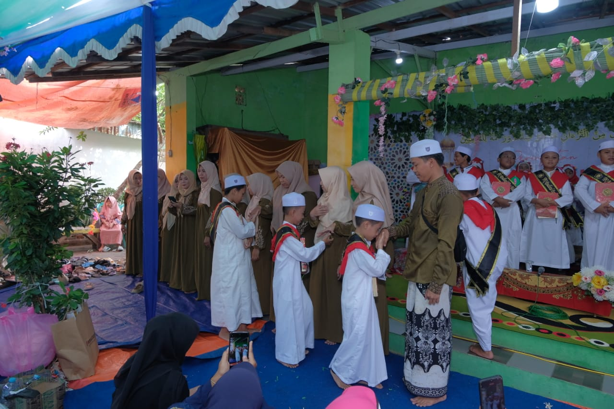

Rutinitas
Kegiatan Rutin
Kegiatan mingguan, bulanan, dan tahunan yang menjadi program unggulan lembaga




Mingguan
Kelas Mengaji & Tahsin
Kegiatan rutin belajar membaca Al-Qur'an dengan metode tartil yang benar sesuai kaidah tajwid. Dilaksanakan setiap hari Senin - Jum'at dengan bimbingan ustadz/ustadzah profesional.


Bulanan
Kegiatan Perlombaan
Lomba-lomba islami antar santri seperti MTQ, pidato, dan kaligrafi yang diadakan setiap bulan untuk mengasah bakat dan prestasi.


Bulanan
Lomba Santri Teladan
Seleksi santri teladan setiap bulan untuk memotivasi santri dalam meningkatkan prestasi akademik dan akhlak mulia.


Tahunan
Peringatan Hari Besar Islam
Peringatan Maulid Nabi, Isra Mi'raj, dan hari besar Islam lainnya dengan berbagai lomba dan kegiatan islami yang meriah.